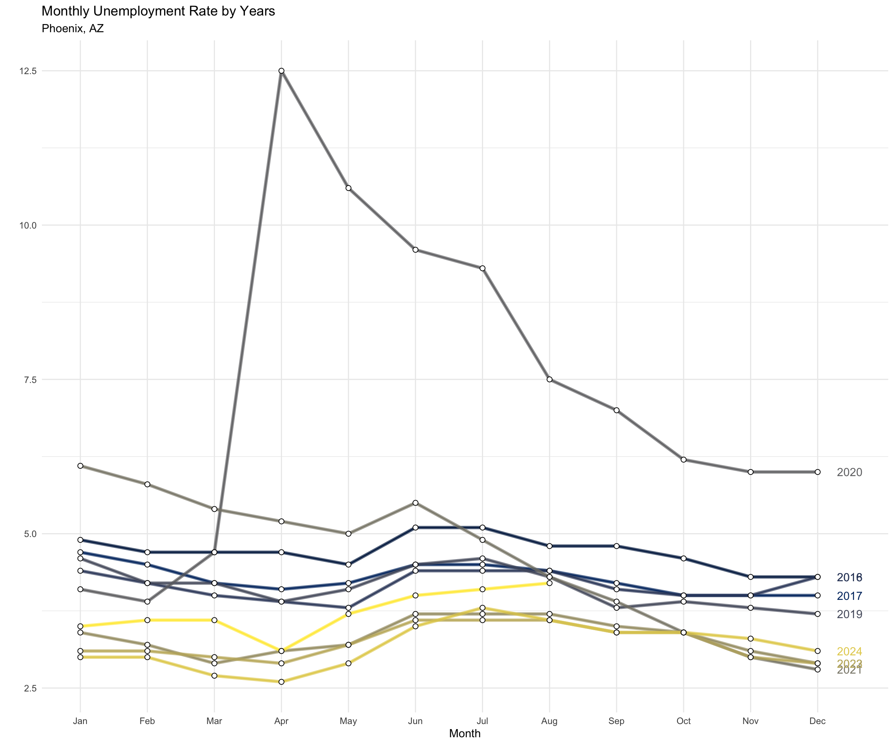
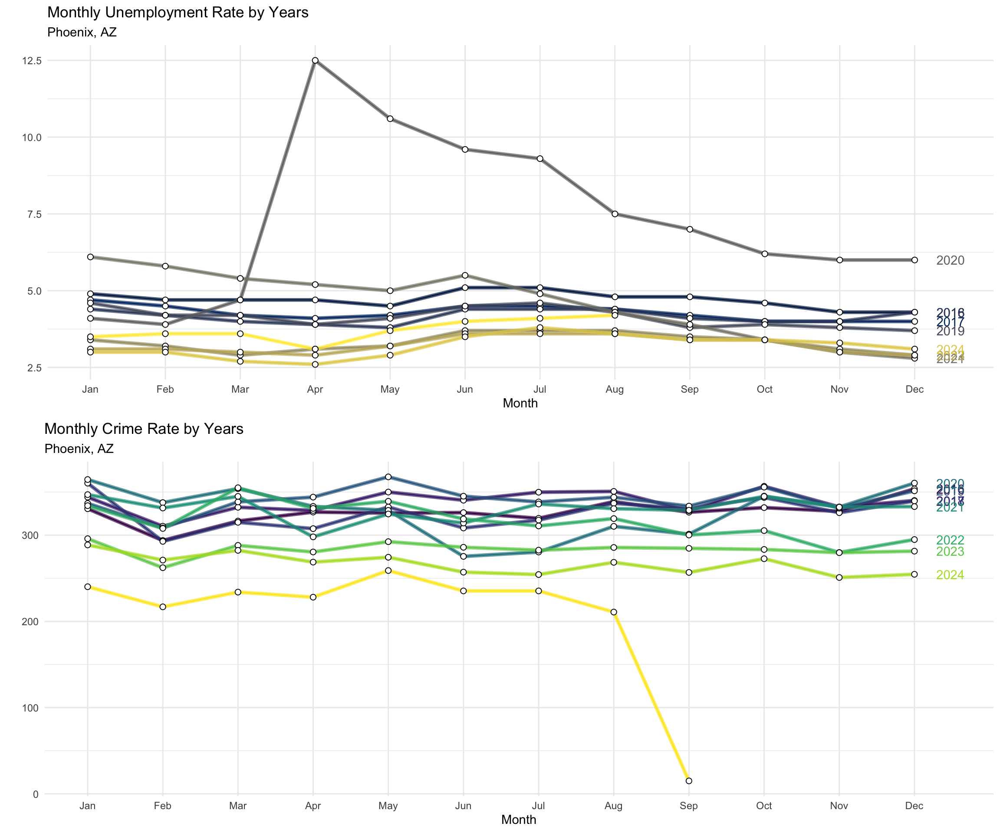
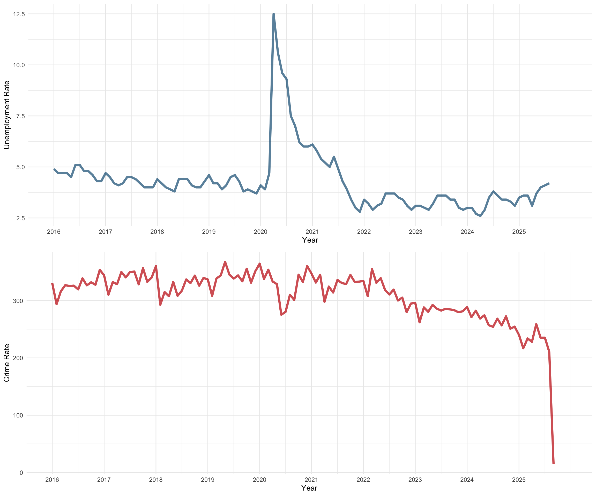
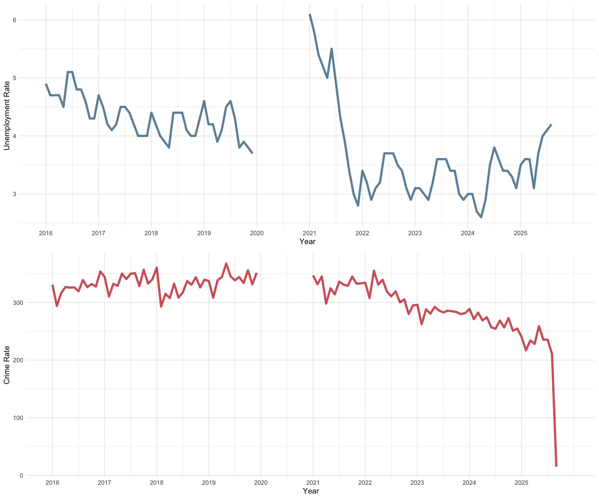
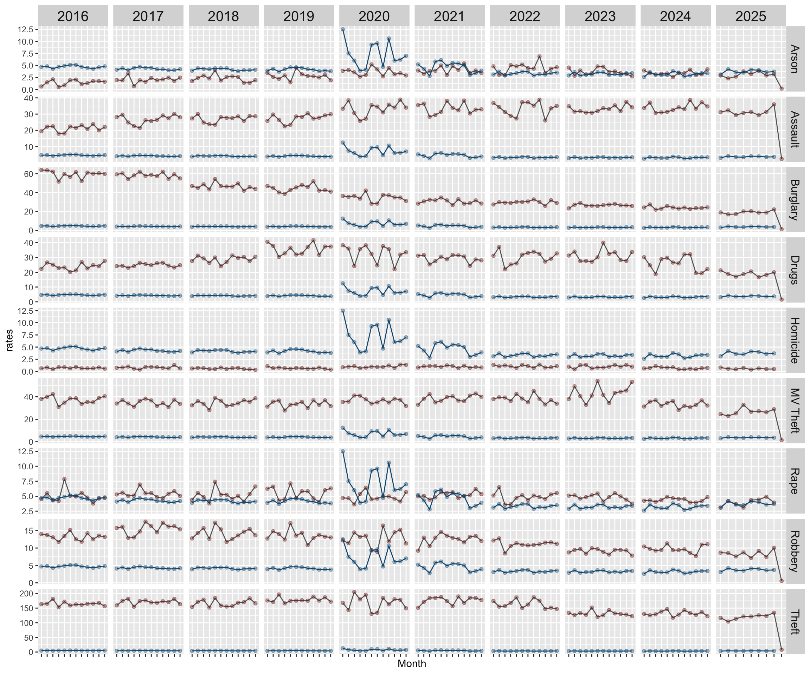

The relationship between crime and unemployment has long been of interest to scholars as well as those outside of academia.
This page takes a look at trends in unemployment using data from the Bureau of Labor Statistics as well as the open data portal.
To get going, we will load all the libraries we need. The code to generate everything you see here is hidden (to reduce clutter). But, if you want to see “how we get there”, just click the “Show” button on the right.
Next, we will load the data. These files are available in the data folder for the repository.
# clear workspace
rm( list = ls() )
# load libraries
library( dplyr ) # used for wrangling the data
library( tidyr ) # used for wrangling the data
library( ggplot2 ) # for plotting
library( cowplot ) # for putting the plots together
library( scales ) # for formatting the text
library( forecast ) # for working with time series data
library( here ) # for referencing the local directory
library( viridis ) # colors for plots below
# define the objects
crimeData <- readRDS( here( "data/crimeData.rds" ) )
crimesByDay <- readRDS( here( "data/crimesByDay.rds" ) )
crimesByMonth <- readRDS( here( "data/crimesByMonth.rds" ) )
crimesByYear <- readRDS( here( "data/crimesByYear.rds" ) )
crimeRatesMonth <- readRDS( here( "data/crimeRatesMonth.rds" ) )
crimeRatesYear <- readRDS( here( "data/crimeRatesYear.rds" ) )
crimeRatesMonthType <- readRDS( here( "data/crimeRatesMonthType.rds" ) )First, load the unemployment data. This makes a call to the Bureau of Labor Statistics API.
library( blscrapeR )
series_id <- "LAUMT043806000000003"
unemployment_data <- bls_api(
series_id,
startyear = head( names( crimeRatesMonth ), n=1 ),
endyear = tail( names( crimeRatesMonth ), n=1 )
)
UnemployByMonth <-
unemployment_data %>%
select( year, periodName, value) %>%
mutate( month = factor( unemployment_data$periodName,levels = month.name ) ) %>%
select( !periodName ) %>%
group_by( year, month ) %>%
spread( year, value ) %>%
ungroup() %>%
select( !month )Now that the object is constructed, we can plot it.
# create a time series object for plotting
monthlyUnemploymentRateByYear <- ts(
matrix( as.matrix( UnemployByMonth ), ncol = 1 ),
start=c( 2016, 1 ),
end=c( as.numeric( tail( names( UnemployByMonth ), n=1 ) ), 12 ), frequency=12
)
# plot the rates
monthlyUnemploymentRateByYear %>%
ggseasonplot(
year.labels = TRUE,
continuous = FALSE,
col = viridis( n = dim( UnemployByMonth )[2], option = "cividis" ) ) +
scale_y_continuous( labels = comma ) +
geom_line( size = 1.5, alpha = 0.7 ) +
geom_point( size = 2, shape = 21, fill = "white", color = "black" ) +
ggtitle(
"Monthly Unemployment Rate by Years",
subtitle = "Phoenix, AZ" ) +
theme_minimal()
Now, we can plot unemployment with crime.
# create a time series object for plotting
monthlyCrimeRateByYear <- ts(
matrix( as.matrix( crimeRatesMonth ), ncol = 1 ),
start=c( 2016, 1 ),
end=c( as.numeric( tail( names( crimeRatesMonth ), n=1 ) ), 12 ), frequency=12
)
# drop 2025 from the monthlyCrimeRateByYear object as the
# unemployment data are not yet available
#monthlyCrimeRateByYear <- window(
# monthlyCrimeRateByYear,
# start = c( 2016, 1 ),
# end = c( 2024, 12 ) )
# render the plot
crime_seasonplot <- monthlyCrimeRateByYear %>%
ggseasonplot(
year.labels = TRUE,
continuous = FALSE,
col = viridis( n = dim( crimeRatesMonth )[2], option = "viridis" ) ) +
scale_y_continuous( labels = comma ) +
geom_line( size = 1.5, alpha = 0.7 ) +
geom_point( size = 2, shape = 21, fill = "white", color = "black" ) +
ggtitle(
"Monthly Crime Rate by Years",
subtitle = "Phoenix, AZ" ) +
theme_minimal()
unemployment_seasonplot <- monthlyUnemploymentRateByYear %>%
ggseasonplot(
year.labels = TRUE,
continuous = FALSE,
col = viridis( n = dim( UnemployByMonth )[2], option = "cividis" ) ) +
scale_y_continuous( labels = comma ) +
geom_line( size = 1.5, alpha = 0.7 ) +
geom_point( size = 2, shape = 21, fill = "white", color = "black" ) +
ggtitle(
"Monthly Unemployment Rate by Years",
subtitle = "Phoenix, AZ" ) +
theme_minimal()
combined_plot <- plot_grid( unemployment_seasonplot, crime_seasonplot, ncol = 1 )
print( combined_plot )
We can rework these to show the trends over time (rather than having time stacked).
actual_data <- data.frame(
dsCrime = time( monthlyCrimeRateByYear ),
yCrime = as.numeric( monthlyCrimeRateByYear ),
dsUnemp = time( monthlyUnemploymentRateByYear ),
yUnemp = as.numeric( monthlyUnemploymentRateByYear )
)
unemp_plot <-
ggplot( data = actual_data, aes( x = dsUnemp, y = yUnemp ) ) +
geom_line( color = "#c41104", size = 1.5, alpha = 0.7 ) +
scale_x_continuous( breaks = seq( min( actual_data$dsUnemp) , max( actual_data$dsUnemp ), by = 1 ) ) +
labs( x = "Year", y = "Unemployment Rate", color = "Unemployment Rate" ) +
theme_minimal()
crime_plot <-
ggplot( data = actual_data, aes( x = dsCrime, y = yCrime ) ) +
geom_line( color = "#c41104", size = 1.5, alpha = 0.7 ) +
scale_x_continuous( breaks = seq( min( actual_data$dsCrime) , max( actual_data$dsCrime ), by = 1 ) ) +
labs( x = "Year", y = "Crime Rate", color = "Crime Rate" ) +
theme_minimal()
combined_plot <- plot_grid( unemp_plot, crime_plot, ncol = 1 )
print( combined_plot )
Now we can examine the correlation between the two, which is 0.215.
Ok, my guess is you are saying “hey! 2020 is a bit of an outlier and throwing things off!”. Great point! Let’s drop 2020 and re-examine the relationship.
To do so, we can just exclude 2020 from the data object. But, we simply make it missing so that it does not mess up the x-axis labels on our plot.
# filter the data to make 2020 NA.
actual_data_with_gap <- actual_data %>%
mutate(
yUnemp = ifelse(as.integer(dsUnemp) == 2020, NA, yUnemp),
yCrime = ifelse(as.integer(dsCrime) == 2020, NA, yCrime)
)
unemp_plot <-
ggplot( data = actual_data_with_gap, aes( x = dsUnemp, y = yUnemp ) ) +
geom_line( color = "#c41104", size = 1.5, alpha = 0.7 ) +
scale_x_continuous( breaks = seq( min( actual_data$dsUnemp) , max( actual_data$dsUnemp ), by = 1 ) ) +
labs( x = "Year", y = "Unemployment Rate", color = "Unemployment Rate" ) +
theme_minimal()
crime_plot <-
ggplot( data = actual_data_with_gap, aes( x = dsCrime, y = yCrime ) ) +
geom_line( color = "#c41104", size = 1.5, alpha = 0.7 ) +
scale_x_continuous( breaks = seq( min( actual_data$dsCrime) , max( actual_data$dsCrime ), by = 1 ) ) +
labs( x = "Year", y = "Crime Rate", color = "Crime Rate" ) +
theme_minimal()
combined_plot <- plot_grid( unemp_plot, crime_plot, ncol = 1 )
print( combined_plot )
Now we can examine the correlation between the two, which is 0.489. That looks more appropriate. Or, it shows how sensitive the interpretation is to the inclusion of the data from 2020.
So far, we have examined the relationship between unemployment and crime over all types of crime. But, what about different types of crime? Might the relationship vary?
First, we need to rework the unemployment data to merge it with the monthly crime data.
# convert unemployment matrix to a data frame
unemploy_long <- as.data.frame( as.table( as.matrix( UnemployByMonth ) ) )
# rename the columns for clarity
colnames( unemploy_long ) <- c( "month", "year", "u_rate" )
# replace numeric months with abbreviated month names
unemploy_long$month <- month.abb[unemploy_long$month]
# ensure `year` is numeric
unemploy_long$year <- as.character( unemploy_long$year )
#unemploy_long$year <- as.numeric( as.character( unemploy_long$year ) )Now, we can merge these data to the monthly crime type data.
crimeRatesMonthTypeUnemp <- crimeRatesMonthType %>%
left_join( unemploy_long, by = c( "year", "month" ) )Now we can plot it.
crimeRatesMonthTypeUnemp %>%
ggplot( aes( month, rates, group = 1 ) ) +
geom_line( color = "grey40" ) +
geom_point( alpha = 2/5, color = "#751913" ) +
geom_line( aes( y = u_rate ), color = "#105a82" ) +
geom_point( aes( y = u_rate ), alpha = 2/5, color = "#105a82" ) +
facet_grid( crime.type ~ year, scales="free" ) +
theme( axis.text.x=element_blank(),
strip.text.x = element_text( size = 15 ),
strip.text.y = element_text( size = 12 ) ) +
xlab( "Month" )
Note that this looks a bit wonky. That is because the unemployment rate is being plotted based on the same rate scale as crime. So, when those rates are really different, they will not plot well (without adjustment).
Back to Open Criminology Phoenix page
Please report any needed corrections to the Issues page. Thanks!